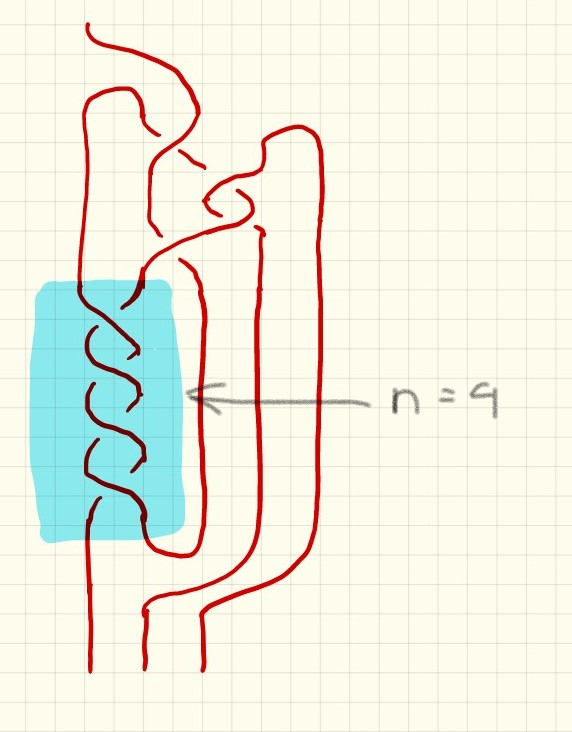

Quotient Tangles of $(2, 2n + 1)$ Torus Knots
where $n$ is the number of twists in the designated region

{% include header.html %}
{% for i in (1...5) %}
$n = {{i}}$
{% assign j = i | times: 2 | plus: 1 %}
.jpg) {% include asimov_{{i}}.html %}
{% include asimov_{{i}}_small.html %}
{% endfor %}
{% include asimov_{{i}}.html %}
{% include asimov_{{i}}_small.html %}
{% endfor %}